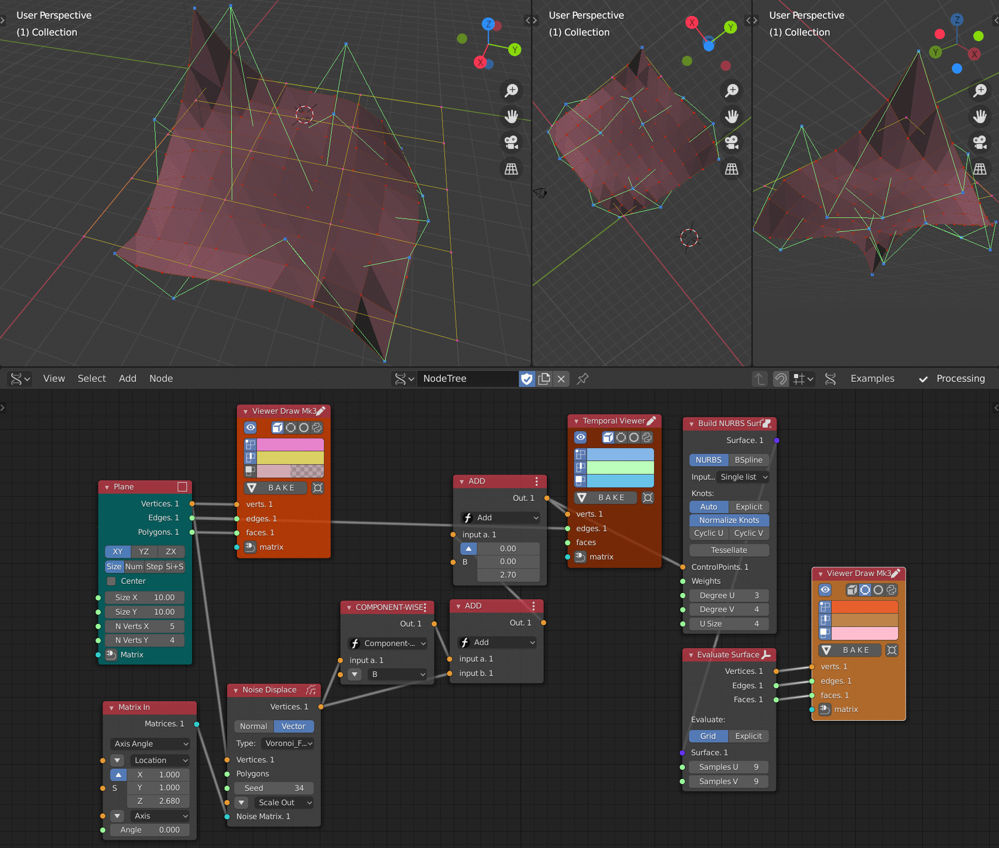

Build NURBS surface¶

Dependencies¶
This node can optionally use Geomdl library; also it can optionally use FreeCAD libraries.
Functionality¶
This node generates a NURBS Surface, given all it’s details: control points, weights and knot vector.
To build a NURBS surface, one needs an array of M x N control points (like “3 rows by 4 control points”). There are two modes of providing this array supported:
You can provide a list of lists of control points for each surface;
Or you can provide a flat list of control points, and instruct the node to subdivide it into sublists of N control points each.
Inputs¶
This node has the following input:
ControlPloints. The control points determine the shape of the curve. Depending on Input mode parameter, it expects either list of lists of control points per surface, or a flat list of control points per surface. Typically, each point of the curve is computed by taking a weighted sum of a number of control points.
Weights. Weights of surface control points. This input is not available if Surface type parameter is set to BSpline. If this input is not linked, it will be assumed that all control points have equal weight of 1.
KnotsU, KnotsV. Knot vectors for U and V directions, correspondingly. These inputs are available and mandatory when Knots parameter is set to Explicit. Otherwise, the node will use automatically generated knot vectors.
Degree U, Degree V. Degree of the surface along U and V directions, correspondingly. The default value is 3.
U Size. This input is only available when Input mode parameter is set to Single list. The number of control points in a row. The default value is 5.
Parameters¶
This node has the following parameters:
Implementation. This defines the implementation of NURBS mathematics to be used. The available options are:
Geomdl. Use Geomdl library. This option is available only when Geomdl package is installed.
Sverchok. Use built-in Sverchok implementation.
FreCAD. Use FreeCAD libraries. This option is available only when FreeCAD libraries are installed.
In general, built-in implementation should be faster; but Geomdl implementation is better tested. The default option is Geomdl, when it is available; otherwise, built-in implementation is used.
Surface mode. Values: NURBS, BSpline
Input mode. The available values are:
Single list. The node expects a flat list of points for each surface. It will be subdivided into rows according to USize input value.
Separate Lists. The node expects a list of lists of points for each surface.
Knots. This defines how the knot vectors are specified:
Auto: Knot vectors are generated automatically (the curve will be clamped and periodic).
Explicit: Knot vectors are explicitly defined in the KnotsU, KnotsV inputs of the node.
Normalize knots. If checked, all knotvector values will be rescaled to
[0 .. 1]range; so, the curve domain will always be from 0 to 1. If not checked, the curve domain will be defined by knotvector.Cyclic U, Cyclic V. Whether the surface should be cyclic (closed) in the U and V direction, correspondingly. These parameters are only available when Knots parameter is set to Auto.
Outputs¶
This node has the following output:
Surface. The generated surface.
Examples of usage¶
These example use a plane as control points.